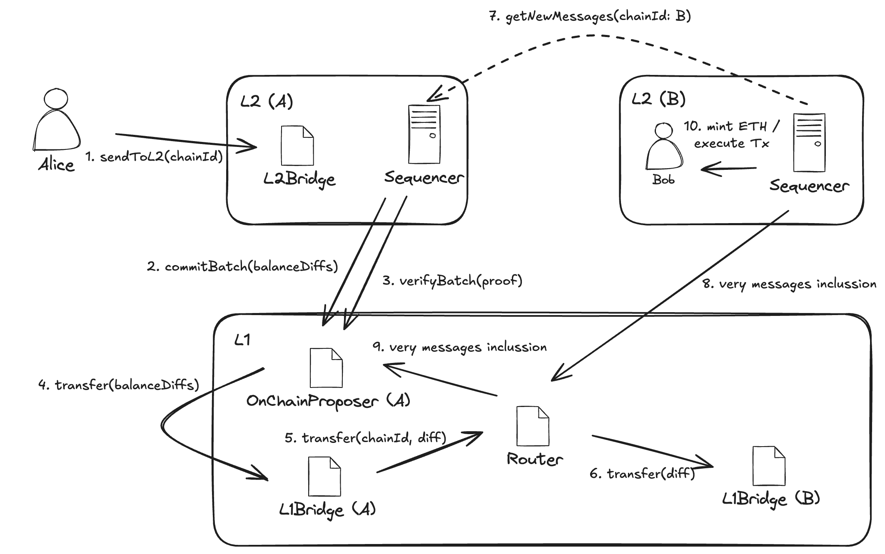

Shared Bridge
Introduction
If a user wants to transfer funds from L2-A to an account on L2-B, the conventional process involves several steps: withdrawing assets from L2-A to Ethereum, claiming the unlocked funds on Ethereum, and then depositing those assets from Ethereum to L2-B. These multiple steps degrade the UX, and two of them require transactions on Ethereum, which are often expensive. This inefficiency arises because there is currently no direct communication channel between different L2s, forcing all interactions to route through their common hub: Ethereum.
The Shared Bridge feature changes this by enabling seamless message passing between L2s. As a result, a user can achieve the same transfer by interacting only with the source chain (L2-A), with the outcome eventually reflecting on the destination chain (L2-B).
While the user performs just one interaction and waits for the result, a similar process to the conventional flow occurs behind the scenes. In the following sections, we'll explore how it works.
High-Level Overview
To understand the behind-the-scenes mechanics, we'll revisit the earlier example. For a quick recap, here's a high-level breakdown of what happens when Alice (on L2-A) wants to send ETH to Bob (on L2-B):

- Source L2 (L2-A, Alice's side): Alice invokes the
sendToL2function on theCommonBridgeL2contract, specifying the destination chain ID (L2-B), Bob's address on L2-B, the ETH amount to send, the gas limit she is willing to consume for the final transaction on L2-B (this gas is burned on L2-A), and optionally the calldata for any custom transaction to execute on L2-B. - Source L2 Sequencer (L2-A): Alice's transaction is included in a block on L2-A. Eventually, a batch containing that block is sealed, and a commitment is submitted to L1 (Ethereum). This commitment includes, among other things, the list of balances to transfer to destination L2s, as well as the hashes of all messages addressed to those L2s.
- Source L2 Prover (L2-A): A zero-knowledge (ZK) proof is generated to validate the commitment for the batch containing Alice's message to Bob.
- Source L2 Sequencer (L2-A): Once the prover delivers the ZK proof, it is submitted to L1 for verification. If the proof is valid, the commitment is marked as verified, the message is considered settled, the funds are transferred between bridges via the Router contract on L1, and the list of transaction hashes is stored in the respective target bridges.
- Destination L2 Sequencer (L2-B): A dedicated process periodically polls a permissioned set of sequencers from other L2s to check for newly emitted messages. It receives Alice's message to Bob preemptively (i.e., possibly before the message is fully settled on L1). Upon receipt, it verifies the message's validity by checking whether the message hash is already present in its own bridge. If the message hash is not yet present (the batch has not been verified on L1), the message is discarded and retried in the next iteration. If the message validates, it is processed, and the transferred ETH is minted to Bob's address on L2-B.
Eventually, the sequencer commits and verifies a batch containing the received and processed messages in the OnChainProposer, clearing their hashes from the pending message hash list in the CommonBridge contract.
Protocol Details
Cross-chain Messaging
A cross-chain message directed from a source L2 to a destination L2 is essentially an event emitted by the CommonBridgeL2 contract within a block on the source L2. These events are triggered upon successful invocations of the sendToL2 function in the CommonBridgeL2.
During batch preparation on the source L2, cross-chain messages are collected. For each target L2, a list of message hashes is constructed, and the balance diffs generated by the messages are calculated. These values are included in the batch commitment submitted to L1 by the L1Committer.
Once the L1Committer prepares the inputs for the prover, the prover requests them and initiates generation of the ZK proof for the specific batch. As part of this process, the prover recomputes hashes of the cross-chain messages and the balance diffs, returning them to be used as public values during on-chain verification. Upon completing proof generation, the prover sends it back to the sequencer—specifically, to the ProofCoordinator.
After the prover delivers the ZK proof validating the batch prepared by the L1Committer, the L1Sender submits it along with the public values for on-chain verification. On-chain, before verifying the proof itself, the submitted public values are compared against the previously committed ones, confirming that the hashes of cross-chain messages and the balance diffs match. If verification succeeds, the involved cross-chain messages are deemed settled, and the state is transferred from the source bridge to the corresponding destination bridges.
To execute a cross-chain message on the destination L2, the message(s) must first be settled on L1. Additionally, the Watcher on the destination L2 must obtain them in advance via internal communication among permissioned sequencers.
While the source L2's batch is being prepared and verified, the destination L2 has already preemptively acquired its corresponding messages. This is feasible because L2s with the Shared Bridge feature enabled are aware of the other sequencers participating in the same Shared Bridge ecosystem. The Watcher—a sequencer component originally designed to handle L1-incoming privileged transactions—periodically scans for relevant correspondence across the permissioned set of L2s. Upon receiving potential matches, the L2 queries its CommonBridge contract on L1 to validate the message (i.e., confirm it has been settled) before processing it. If the message is not yet validated, it is discarded and retried in the next polling iteration.
Replay Attack
Once a cross-chain message is settled on L1, the destination L2's sequencer processes it. To do so, it constructs a privileged transaction from the message's payload and adds it to the mempool only if the hash of this constructed transaction does not match the hash of any previously executed transaction. Hash collisions are prevented, among other measures, by incorporating the source L2's chain ID and the message's nonce (as recorded on the source L2). Each L2 maintains a mapping in its corresponding CommonBridgeL2 contract, using the destination chain ID as the key and the message nonce as the value.
State Availability
Cross-chain messages are forcibly included in recipient chains (see Forced Inclusion). In adverse scenarios—such as a sequencer shutdown, loss of communication with the source L2, or the destination L2's inability to retrieve messages directly—a security mechanism must enable recovery of these messages from L1. This fallback is not yet implemented. However, the necessary data is already available on L1 to support this functionality since the state of the L2 lives in the blobs, so it'd be available as long as the blob containing the L2's data is available.
Proving
Batch proving encompasses several tasks, including recomputing cross-chain messages hashes within the batch and the associated balance diffs. These values are returned as part of the guest program execution output and serve as public inputs for on-chain proof verification.
Source L2 not available
In situations where the destination L2 is unable to retrieve the relevant messages directly, because the source l2 is not available, we need a mechanism to still be able to retrieve them. What should be done is
- The destination L2 should periodically scan the L1 and store the blobs sent on the commitBatch call of the source L2.
- Run the state reconstruct command
- Initialize a sequencer with the reconstructed state
- Use that sequencer as the source for getting the messages
Keep in mind that since you are not the owner of that source L2, the chain will not advance, but you will still be able to get all pending messages to execute, as long as they were previously verified.
Forced Inclusion
Once a cross-chain message is settled, each target commonBridge receives, along with the resulting ETH value, a list of all message hashes with their associated timestamps. When a batch is verified, the prover outputs the rolling hash of the received messages processed in the batch, and the included message hashes are removed from the bridge after verification.
A message is considered expired if a certain deadline is reached and it has not yet been included in a batch on the destination chain. The commonBridge then prevents the sequencer from committing batches that contain non-privileged transactions (deposits and received messages) until all expired messages are included.
Rollbacks
Once a cross-chain message is settled, there is no rollback mechanism in scenarios where the destination L2 either cannot or chooses not to execute the transaction. Forced Inclusion guarantees that the destination sequencer will eventually have to execute the received message in order to include non-privileged transactions in a batch. Therefore, once a message is settled, the user waits for the destination L2 to include the message, just as when the user performs a deposit to that L2.
Recommendations
We advice not to register more than 100 chains, since this will enquire a high cost when verifying a batch (About 1.6M gas), due to the transfers between bridges.